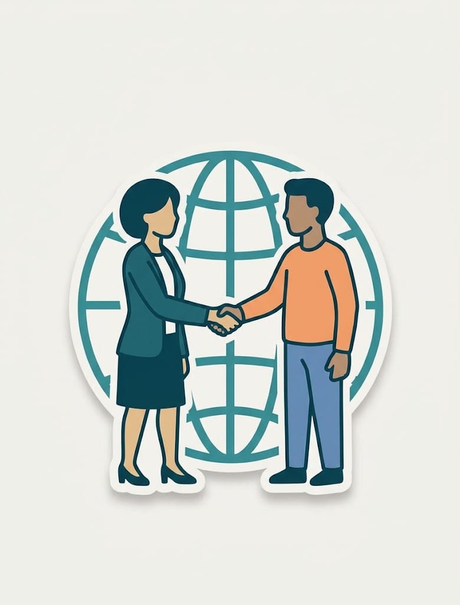
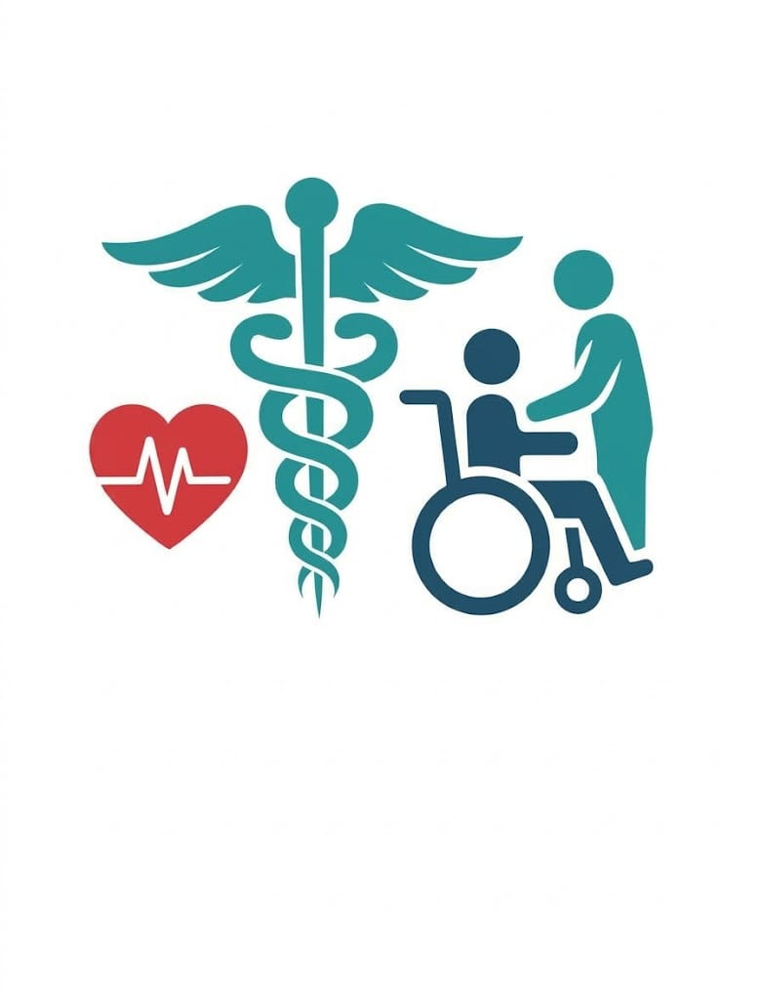
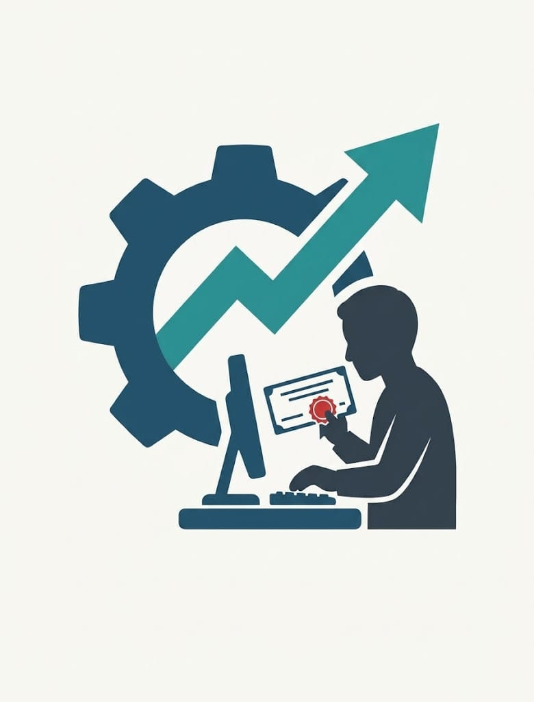
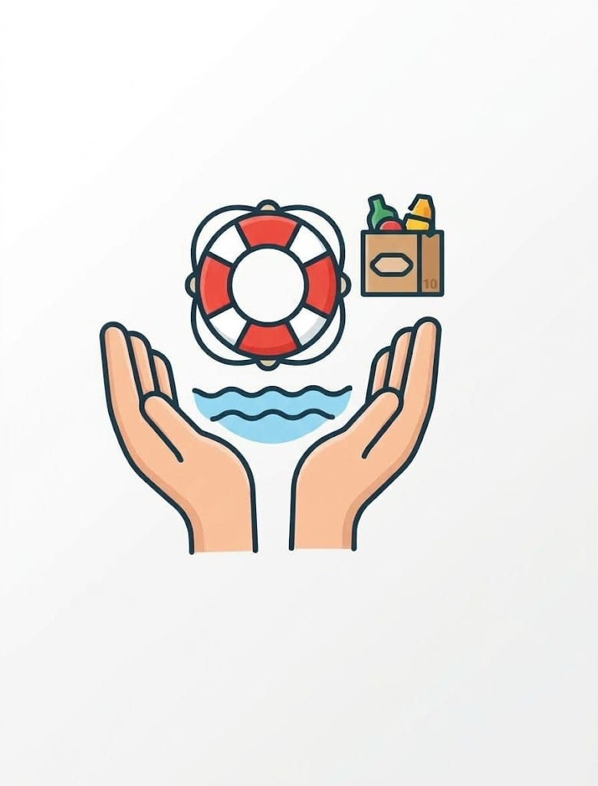
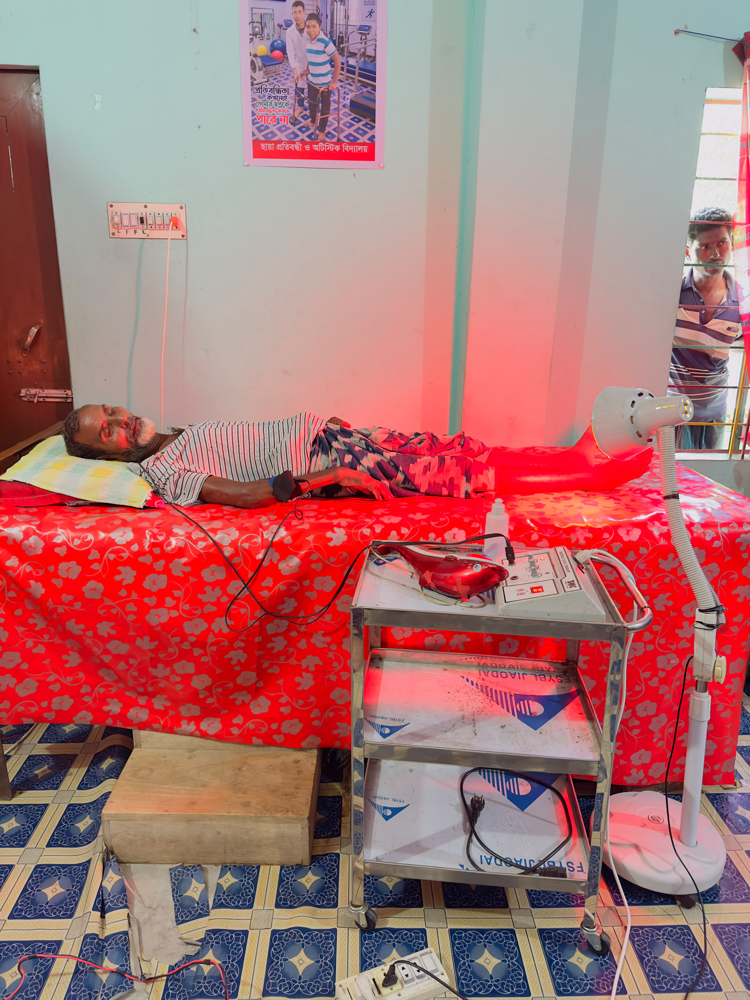
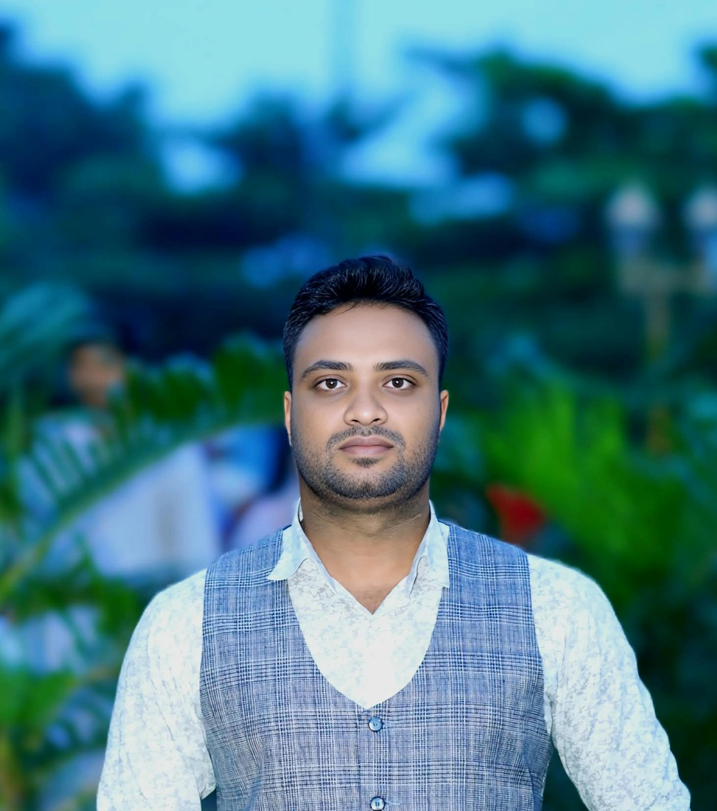
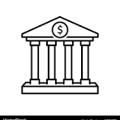
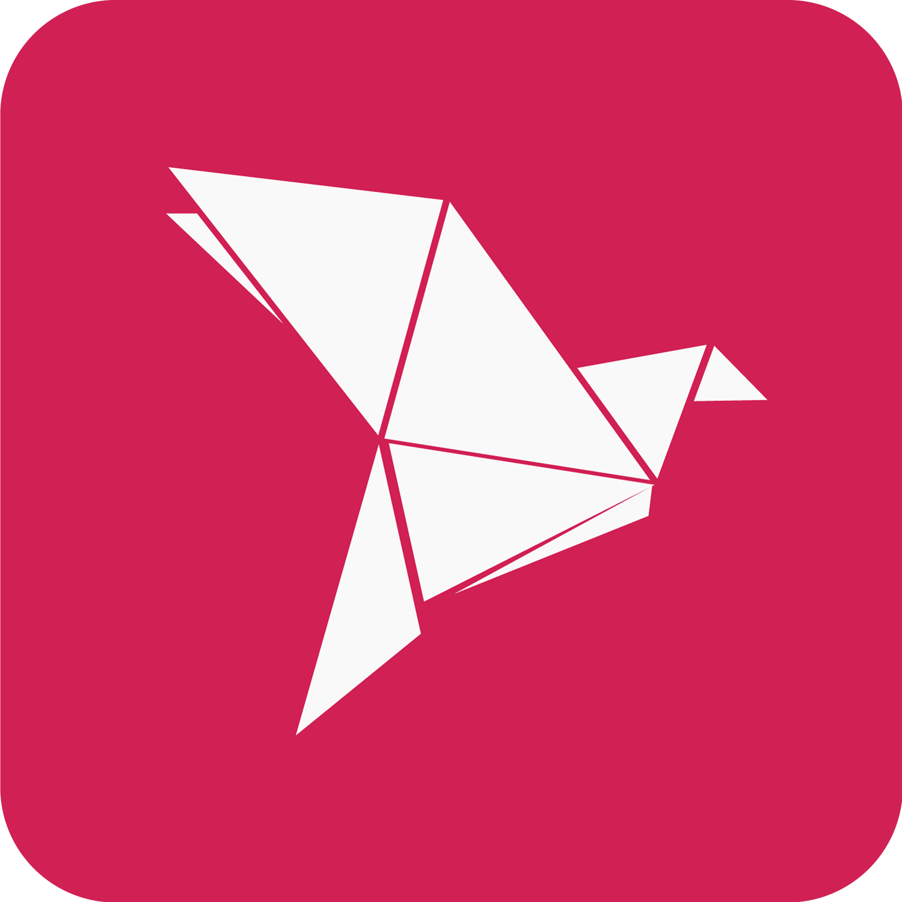

01
Education & Skills
Scholarships, technical education, training centers, libraries and learning opportunities for people from all communities.
নারী ও সাধারণ মানুষের শিক্ষা, প্রশিক্ষণ ও পাঠাভ্যাস গড়ে তোলার উদ্যোগ।
শিক্ষা, চিকিৎসা, মানবসেবা,নারী কর্মদক্ষতা উন্নয়ন ও আত্মনির্ভরশীলতা সৃষ্টির মাধ্যমে সুবিধাবঞ্চিত মানুষের জীবনমান উন্নয়নে আমরা দায়বদ্ধ।

01
02
03
04আমাদের কাজের ভিত্তি হলো অন্তর্ভুক্তি, দক্ষতা, স্বাস্থ্য ও টেকসই উন্নয়ন।
এলিট ওয়েলফেয়ার ফাউন্ডেশন (Elite Welfare Foundation) একটি অলাভজনক, অরাজনৈতিক এবং সমাজসেবামূলক উন্নয়ন সংস্থা। গভঃ রেজি নংঃ এস-১৪৯১৭/২০২৬ (S-14917/2026)
স্থানীয় ও জাতীয় পর্যায়ে টেকসই উন্নয়ন, সামাজিক অন্তর্ভুক্তি এবং প্রান্তিক জনগোষ্ঠীর জীবনযাত্রার মানোন্নয়নে সংস্থাটি সমগ্র বাংলাদেশে প্রতিশ্রুতিবদ্ধভাবে কাজ করে যাচ্ছে। নাটোর ও রাজশাহী চরঅঞ্চলকে মূল কর্মক্ষেত্র হিসেবে বিবেচনা করে, উদ্ভাবনী সামাজিক উদ্যোগ ও অংশীদারিত্বের মাধ্যমে একটি স্বাবলম্বী ও সমৃদ্ধ সমাজ বিনির্মাণই আমাদের প্রধান উদ্দেশ্য।
নারী ক্ষমতায়ন ও উদ্যোক্তা উন্নয়ন: প্রান্তিক নারী উদ্যোক্তাদের জন্য প্ল্যাটফর্ম তৈরি, ব্যবসায়িক দক্ষতা বৃদ্ধি এবং অর্থনৈতিক আত্মনির্ভরশীলতা অর্জনে সহায়তা প্রদান।
কারিগরি ও দক্ষতা উন্নয়ন প্রশিক্ষণ: যুবসমাজ ও সম্ভাবনাময় জনগোষ্ঠীকে আধুনিক বৃত্তিমূলক ও প্রযুক্তিগত প্রশিক্ষণের মাধ্যমে দক্ষ মানবসম্পদে রূপান্তর।
স্বাস্থ্যসেবা ও শারীরিক পুনর্বাসন: সুবিধাবঞ্চিত ও শারীরিকভাবে চ্যালেঞ্জড ব্যক্তিদের জন্য বিশেষায়িত চিকিৎসা, থেরাপি এবং পুনর্বাসন সুবিধা নিশ্চিতকরণ।
সামাজিক নিরাপত্তা ও মানবসেবা: দুস্থ, বয়োবৃদ্ধ ও ঝুঁকিপূর্ণ জনগোষ্ঠীর মৌলিক চাহিদা পূরণ এবং জরুরি সামাজিক সহায়তা কর্মসূচি পরিচালনা।
একটি বৈষম্যহীন, দারিদ্র্যমুক্ত ও প্রযুক্তিবান্ধব সমাজ গঠন—যেখানে প্রতিটি নাগরিক নিজস্ব দক্ষতা ও সম্ভাবনার পূর্ণ বিকাশ ঘটিয়ে আত্মমর্যাদার সাথে বসবাস করবে।
অন্তর্ভুক্তিমূলক শিক্ষা, কারিগরি প্রশিক্ষণ এবং ক্ষুদ্র উদ্যোক্তা তৈরির মাধ্যমে কর্মসংস্থান ও আয়বর্ধনমূলক সুযোগ সৃষ্টি করা।
সরকারি ও বেসরকারি (Public-Private Partnership) সংস্থা এবং নীতি-নির্ধারকদের সাথে কৌশলগত সহযোগিতা জোরদার করা।
তথ্যভিত্তিক, স্বচ্ছ ও ফলাফলমুখী সামাজিক প্রকল্প বাস্তবায়নের মাধ্যমে প্রান্তিক জনগোষ্ঠীর টেকসই উন্নয়ন সুনিশ্চিত করা।
স্বচ্ছতা ও জবাবদিহিতা (Transparency & Accountability): আমাদের প্রতিটি উদ্যোগ ও অর্থনৈতিক পরিচালনায় আন্তর্জাতিক মানদণ্ড ও সততা বজায় রাখা।
অন্তর্ভুক্তিমূলক উন্নয়ন (Inclusivity): ধর্ম, বর্ণ, লিঙ্গ বা শ্রেণি নির্বিশেষে সমাজের সকল স্তরের মানুষকে সমান গুরুত্ব প্রদান।
টেকসই সমাধান (Sustainability): সাময়িক ত্রাণের পরিবর্তে দীর্ঘমেয়াদী সক্ষমতা বৃদ্ধি ও স্বাবলম্বিতা অর্জনকে অগ্রাধিকার দেওয়া।
"এলিট ওয়েলফেয়ার ফাউন্ডেশনে আমরা বিশ্বাস করি—প্রকৃত উন্নয়ন ঘটে তখন, যখন সমাজের প্রতিটি মানুষ তার পূর্ণ সম্ভাবনায় পৌঁছানোর সুযোগ পায়। আমাদের লক্ষ্য কেবল সহায়তা করা নয়, বরং প্রতিটি মানুষকে নিজ পায়ে দাঁড়ানোর শক্তি ও সুযোগ জুগিয়ে দেওয়া। একটি সুন্দর ও প্রগতিশীল আগামী নির্মাণে আমরা আপনাদের সকলের সহযোগিতা ও অংশগ্রহণ কামনা করি।"
শিক্ষা, স্বাস্থ্য, নারী ক্ষমতায়ন, মানবিক সহায়তা, অধিকার, জলবায়ু ও জীবিকা উন্নয়নে আমাদের কাজ বিস্তৃত।
Scholarships, technical education, training centers, libraries and learning opportunities for people from all communities.
নারী ও সাধারণ মানুষের শিক্ষা, প্রশিক্ষণ ও পাঠাভ্যাস গড়ে তোলার উদ্যোগ।
Medical support, health awareness, clinical services, mental health, rehabilitation and assistance for people with disabilities.
ফ্রি মেডিকেল ক্যাম্প, স্বাস্থ্যসেবা, পুনর্বাসন ও মানবিক সহায়তা।
Socio-economic empowerment, vocational training, self-employment and support for distressed and disadvantaged women.
নারীদের আর্থ-সামাজিক ক্ষমতায়ন ও আত্মকর্মসংস্থানের সুযোগ সৃষ্টি।
Relief and rehabilitation for poor, shelter-less and disaster-affected people, including emergency community support.
দুর্যোগ, শীত, বন্যা ও সংকটের সময় ত্রাণ ও পুনর্বাসন সহায়তা।
Awareness and legal aid around domestic violence, social security, family matters and civil/criminal issues affecting women and children.
নারী ও শিশুর অধিকার, পারিবারিক সহিংসতা ও আইনি সহায়তা সম্পর্কে সচেতনতা।
Poverty reduction through agriculture, infrastructure, cultural development, climate awareness and livelihood-oriented activities.
কৃষি উন্নয়ন, জলবায়ু সচেতনতা ও টেকসই জীবিকা উন্নয়নে কাজ।

সুবিধাবঞ্চিত প্যারালাইজড রোগীদের বিনামূল্যে ফিজিওথেরাপি ও পরিবহন এবং পুনর্বাসনসেবা চালু আছে।

মানবিক সহায়তা, স্বাস্থ্যসেবা, শিক্ষা, দক্ষতা উন্নয়ন ও নারীর ক্ষমতায়নে আপনার অনুদান গুরুত্বপূর্ণ ভূমিকা রাখে।


এই নম্বরে বিকাশ পেমেন্টের মাধ্যমে আপনার অনুদান পাঠাতে পারেন। অনুদান পাঠানোর পর প্রয়োজনে আমাদের সাথে যোগাযোগ করুন।
Payment number: +88 01763388121নিচের তথ্য আপনার দেওয়া সংগঠনগত নথি ও লেখার ভিত্তিতে রাখা হয়েছে।
i) ফাউন্ডেশনের নাম হলো "এলিট ওয়েলফেয়ার ফাউন্ডেশন"।
ii) ফাউন্ডেশনের নিবন্ধিত কার্যালয় অবস্থিত হবে হাউস-১/১, রোড-১৩, ব্লক-ডি, মিরপুর-৬, ঢাকা, বাংলাদেশ অথবা ফাউন্ডেশন সময়ে সময়ে নির্ধারিত অন্য কোনো স্থানে।
iii) "এলিট ওয়েলফেয়ার ফাউন্ডেশন"-এর কর্ম এলাকা/পরিচালনা এলাকা হবে সমগ্র বাংলাদেশ এবং গভর্নিং কাউন্সিলের সিদ্ধান্ত অনুসারে বাংলাদেশের যেকোনো স্থানে শাখা কার্যালয় খোলা হবে।
iv) ফাউন্ডেশনের উদ্দেশ্যসমূহ:
ফাউন্ডেশনের উদ্দেশ্যসমূহ পূরণের লক্ষ্যে, ফাউন্ডেশন অনুদান বা ঋণ হিসেবে বাংলাদেশ ও বিদেশের আগ্রহী ব্যক্তিবর্গ এবং প্রতিষ্ঠানগুলোর কাছে অর্থ ও তহবিলের জন্য আবেদন/আবেদনপত্র আহ্বান করা এবং নগদ অর্থ, সিকিউরিটিজ এবং যেকোনো স্থাবর বা অস্থাবর সম্পত্তির উপহার, দান ও চাঁদা গ্রহণ করা।
এর লক্ষ্য ও উদ্দেশ্যের সাথে সম্পর্কিত যেকোনো এনডাউমেন্ট (দেয় তহবিল) বা ট্রাস্ট ফান্ড বা অনুদানের ব্যবস্থাপনা গ্রহণ ও পরিচালনা করা।
দেশ ও বিদেশে উচ্চশিক্ষা এবং গবেষণার কাজের জন্য ফেলোশিপ, পুরস্কার, প্রাইজ, বৃত্তি ও উপবৃত্তি প্রদান ও মঞ্জুর করা।
যেকোনো উদ্দেশ্য অগ্রসর করা ও অর্জনের জন্য তহবিল গঠনের লক্ষ্যে প্রয়োজনীয় ফান্ড সংগ্রহের আবেদন করা এবং অন্যান্য সমস্ত কাজ করা; জাতীয় ও আন্তর্জাতিক উৎস থেকে নগদ অর্থ, পণ্য সামগ্রী, সিকিউরিটিজ এবং অন্য যেকোনো সম্পত্তি হিসেবে উপহার, দান, চাঁদা ও অনুদান গ্রহণ করা; তবে শর্ত থাকে যে, "বৈদেশিক অনুদান (স্বেচ্ছাসেবামূলক কার্যক্রম) নিয়ন্ত্রণ আইন, ২০১৬"-এ বর্ণিত শর্তাবলি অনুসরণ না করে ফাউন্ডেশন কোনো বৈদেশিক অনুদান গ্রহণ করবে না; এবং শিক্ষার্থীদের কাছ থেকে ফি ও উন্নয়ন চার্জ গ্রহণ করা।
খামার ও ব্যবসায়িক প্রতিষ্ঠান পরিচালনার মতো উদ্দেশ্যে ফাউন্ডেশনের সম্পদ ও সম্পত্তি ব্যবহার করা।
ফাউন্ডেশনের লক্ষ্য ও উদ্দেশ্য অগ্রসরকরণ ও অর্জনের জন্য অর্থ ঋণ গ্রহণ করা এবং সংগঠনের সম্পদ ও সম্পত্তি বৃদ্ধির লক্ষ্যে এই ধরনের অর্থ ও তহবিল বিনিয়োগ করা এবং তা নিয়ে কাজ করা।
বাংলাদেশের যেকোনো স্থানে অস্থায়ী বা স্থায়ীভাবে যেকোনো স্থাবর বা অস্থাবর সম্পত্তি নির্মাণ, রক্ষণাবেক্ষণ, পরিবর্তন, অর্জন, ক্রয় করা বা অন্যথায় মালিকানা গ্রহণ অথবা ইজারা বা ভাড়া নেওয়া।
ফাউন্ডেশনের আয় ও অর্থায়ন নিম্নলিখিত উপায়ে পরিচালিত হবে;
ফাউন্ডেশন আয়বর্ধক ও লাভজনক কার্যক্রমে যুক্ত হতে পারে, এবং অর্জিত মুনাফা ফাউন্ডেশনের লক্ষ্য ও উদ্দেশ্য বাস্তবায়নে ব্যবহার করা হবে।
ফাউন্ডেশনের আয় এবং সম্পত্তি, তা যেখান থেকেই অর্জিত হোক না কেন, তা কেবল ফাউন্ডেশনের লক্ষ্য ও উদ্দেশ্যসমূহের উন্নয়নেই প্রয়োগ করা হবে। ফাউন্ডেশনের আয়, অনুদান এবং সম্পত্তি কেবল এই স্মারকে উল্লেখিত 'এলিট ওয়েলফেয়ার ফাউন্ডেশন'-এর লক্ষ্য ও উদ্দেশ্য পূরণের একক উদ্দেশ্যে ব্যবহার করা হবে; ফাউন্ডেশনের সদস্যগণ প্রত্যক্ষ বা পরোক্ষভাবে লভ্যাংশ, বোনাস, মুনাফা, বেতন, সম্মানী, পকেট মানি বা অন্য কোনো উপায়ে উক্ত দান বা আয়ের কোনো অংশ পাবেন না বা তাদের কাছে হস্তান্তর করা হয় না।
i) The name of the Foundation is “Elite Welfare Foundation”
ii) The Registered Office of the Foundation shall be situated at House-1/1, Road-13, Block-D, Mirpur-6, Dhaka., Bangladesh or such other place as the Foundation may time to time determine.
iii) The Working/Operational area of “Elite Welfare Foundation” will be all over Bangladesh and as per the decision of Governing Council will open branch offices anywhere in Bangladesh.
iv) Objectives of the Foundation:
Issue appeals / applications for money and funds from interested persons and organizations in Bangladesh and abroad as grants or loan and to accept gifts, donations and subscriptions of cash and securities and any property either movable or immovable.
Undertake and accept the management of any endowment or trust fund or donation relevant to its goal and objectives.
Confer and grant fellowship, awards, prize, scholarship and stipends for higher studies and research works in the country and abroad.
Make appeal for raising necessary fund and do all other acts for generation of fund for furtherance and achieving any of the objectives and receive gifts, donations, contributions subscriptions and grants in cash, kind, security and any other property from national and international sources provided that the Foundation shall not receive any foreign donation without complying with the requirements and laid down in the Foreign Donation (Voluntary Activities) Regulation Act, 2016 and also receive fees, development charge from the students.
Utilize the wealth and property of the Foundation for purposes such as running farms and business concerns.
Borrow money for furtherance and achievement of objects of the Foundation and to invest and otherwise deal with such money and fund of the organization for promotion of its wealth and property.
Construct, maintain, alter, acquire, purchase or otherwise own or take on lease or hire in any place of Bangladesh, temporarily or permanently, any movable or immovable property.
The income as well as finance of the Foundation will be managed in the following ways;
The Foundation may engage in income-generating and profit-making activities, and the profit will be utilized for the implementation of the goal and objectives of the Foundation.
The income and property of the Foundation, whatsoever derived, shall be applied solely towards the promotion of the objectives and the purposes of the Foundation. The income, donations, and property of the foundation will be used for the sole purpose of serving the Elite Welfare Foundation objectives set forth on this memorandum; no portion of the WFT donations or income shall be paid or transferred directly or indirectly by way of dividend, bonus, profit, salary, honorarium, pocket money, or otherwise by members of the Foundation.
For partnership, CSR collaboration, humanitarian projects or general inquiries, get in touch with the foundation.